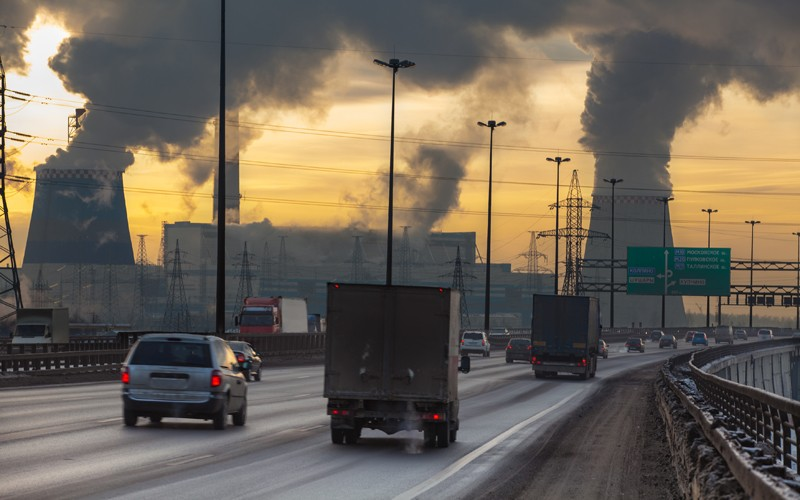
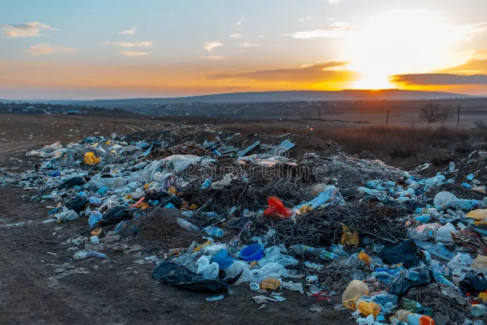

O que é a poluição do campo à cidade?
Com o crescimento das cidades e a expansão urbana, a poluição se torna um dos maiores problemas ambientais. Mas você sabia que a poluição também pode começar no campo e chegar até a cidade? A transição entre o campo e as áreas urbanas influencia diretamente a qualidade do ar, da água e do solo, além de afetar a biodiversidade e a saúde pública.


Impactos da poluição
A poluição que se origina no campo e chega às cidades tem vários impactos significativos:
- Contaminação do solo: Uso excessivo de pesticidas e fertilizantes químicos nas áreas rurais.
- Poluição do ar: Emissões de gases poluentes pelas indústrias, que afetam a qualidade do ar nas cidades.
- Perda de biodiversidade: Urbanização e destruição de habitats naturais resultam em redução de espécies.
- Saúde pública: O aumento de doenças respiratórias e cardiovasculares devido à poluição.
Soluções para reduzir a poluição
Existem diversas abordagens que podem mitigar a poluição entre o campo e a cidade:
- Práticas agrícolas sustentáveis: Uso responsável de pesticidas e fertilizantes, além de cultivo de variedades locais.
- Reflorestamento urbano: Implantação de áreas verdes nas cidades, como parques e jardins urbanos, para melhorar a qualidade do ar.
- Desenvolvimento de transporte sustentável: Incentivo ao uso de bicicletas e transporte público para reduzir a emissão de gases.
- Educação ambiental: Conscientização da população sobre a importância de práticas ecológicas no dia a dia.